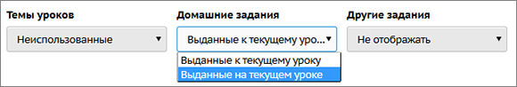
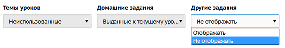
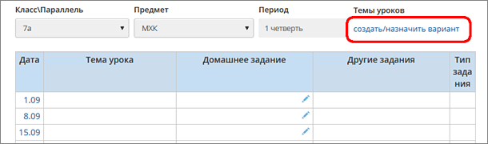
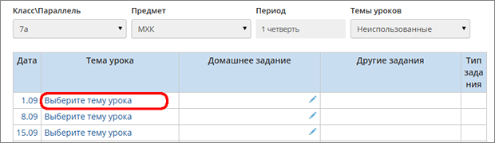

Эта страница является аналогом "правой половины" бумажного классного журнала. В ней отражены следующие поля:
| · | Дата
|
| · | Тема урока
|
| · | Домашнее задание
|
| · | Задания других типов
|
| · | Вес (в случае, если включён режим средневзвешенных оценок).
|
Отображение домашнего задания
Внимание! По умолчанию домашнее задание отображается не напротив того урока, на котором оно выдано, - а напротив того урока, к которому оно было задано (т.к. именно на этом уроке учащиеся получат оценку за проверенное домашнее задание). Чтобы работать с привычной "правой половиной" классного журнала, вверху в фильтре Домашнее задание выберите значение "Выданные на текущем уроке":

Отображение других заданий
Поля "Другие задания" и "Тип задания" позволяют работать с такими типами заданий как контрольная работа, ответ на уроке и др. Если вы хотите видеть только привычную "правую половину" классного журнала, то вверху в фильтре Другие задания выберите значение "Не отображать":

Поле "Дата"
Дата занятия в расписании, она также соответствует столбцу в "левой половине" классного журнала.
Нажав на конкретную дату, можно перейти в экран "Выставить оценки" для этой даты.
Поле "Тема урока"
Если вы видите в этом поле пустые ячейки:
| значит, в данном классе по данному предмету не используется календарно-тематическое планирование (КТП). Вам нужно:
|
| 1) перейти в экран "Планы уроков" и создать вариант КТП по вашему предмету.
|
| 2) указать использование варианта КТП для конкретного класса и предмета. Для этого нажмите на ссылку "создать/назначить вариант":
|
 |
| Затем в экране "Планы уроков" нажмите кнопку Варианты, затем кнопку Использование в журнале и выберите ваш класс и предмет.
|
Если вы видите в этом поле надпись "Выберите тему урока":
| щёлкните в эту надпись напротив нужной даты, раскроется список тем из КТП:
|
 |
Если фильтр "Темы уроков" = Неиспользованные, то вам будет предложена только первая неиспользованная тема - это очень удобно при первоначальном заполнении журнала.
Если фильтр "Темы уроков" = Все, то в выпадающем списке можно выбрать любую тему урока из КТП. Таким образом можно изменить уже назначенную тему на другую тему.
Обязательно нажмите кнопку Сохранить для сохранения выбранных тем уроков.
Поле "Домашнее задание"
Значок в данном поле позволяет создать домашнее задание. А если домашнее задание уже создано, то этот значок позволяет перейти к его редактированию, при этом открывается экран "Редактирование задания".
Значок
Администратор системы в школе может, при желании, запретить назначать домашнее задание на сегодняшний и прошедшие уроки: если включена такая настройка, то система не позволит создать новое ДЗ, однако можно будет редактировать или удалять уже назначенные ДЗ.
Поле "Другие задания"
Поле предназначено для редактирования и удаления других типов заданий, кроме домашних.
Нажав на значок , вы попадете на страницу "Редактирования задания". Создавать же новые задания, кроме домашних, можно только в экране "Выставить оценки".
Поле "Тип задания"
В данном поле выводится тип задания, зафиксированного в столбце "Другие задания". Тип задания выбирается в экране "Выставить оценки" при добавлении нового задания.
|
|